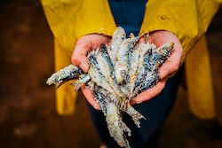
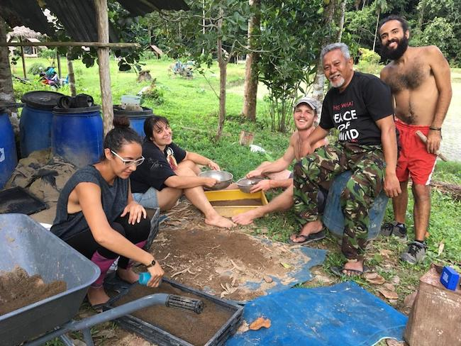
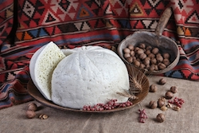

I am interested in what people eat, ate, and will eat. Including myself.
As a roaming freelance writer, my interests are in food. How it is produced, how it is consumed, and how it is used, abused, and percieved. Today, in the past, and in the future.
How we connect with and share what we eat is fundamental, but varied, across different continents, cultures, and time periods.
I have been exploring this idea around the world for the past ten years.
 Lab-made Meat is Here: Are We Going to Eat It?
Lab-made Meat is Here: Are We Going to Eat It?
Contemporary Food Lab
Two companies have claimed that their lab-made meat products will be on supermarket shelves by the end of the year. Whether you like the idea or not, meat made by scientists through cellular agriculture is here. So will it save the world? Or will it be a failed fad?

New Zealand’s ‘sustainable’ seafood: Why it’s not as good as it sounds
Sustainable Food Trust
New Zealand's oft-revered Quota Management System has allowed the New Zealand seafood industry to remind the world, repeatedly, that they “needn’t worry about the health of New Zealand fish stocks”. Except that … we really should..

Tinker, Teacher, Soldier, SRI: The Farmer Pioneering Malaysia’s Organic Future
Slow Food International
It is the only certified organic rice farm in Malaysia. But the man who started it hopes that this will not be the case for long.
 White is the Warmest Colour: Reflections on Our Complicated Love Affair With Refined Flour
White is the Warmest Colour: Reflections on Our Complicated Love Affair With Refined Flour
Contemporary Food Lab
It's no secret that we have fallen out of love with white flour. But getting a divorce now, after 150 years together, is a lot harder than we think.

Tushuri Guda: Better Times Ahead for One of Georgia's Oldest, Most Abused Cheeses?
Slow Food International
Small-scale cheesemakers in Georgia have had a hard time competing with big dairy. But one special cheese is managing to fight back.
 Fill a Basket: The woman helping a remote region in Kyrgyzstan rediscover its wild food heritage
Fill a Basket: The woman helping a remote region in Kyrgyzstan rediscover its wild food heritage
Stone Soup
The landscape around Acha-Kaindy is home to a precious ecosystem, with unique wildlife and wild plants that people have traditionally used to prepare food and for the treatment of various diseases. Today, many of these local wild herbs and plants are on the verge of extinction. Fortunately, however, there are some people who are trying to do something about that.
David is a very creative and engaged writer. He has a strong passion and deep knowledge regarding food, and a knack for finding a unique perspective when writing about it.
Theresa Patzschke, Contemporary Food Lab
David is a writer who we have come to rely upon in the Slow Food International communications office for excellent, thoughtful articles collected during his travels around the world.
Giles Robinson, Slow Food International
I would recommend David for his determination and the joy he has for his work. His writing skills are impressive, and he is able to catch the reader's attention with his simple but attractive writing style.
Valentina Gritti, Slow Food Youth Network
We would highly recommend David to anyone wanting organic, factually accurate content, written with a huge amount of fresh energy and attitude, and always hitting all the key points.
Shane McKay, Pelorus Eco Adventures
David possesses comprehensive, multi-faceted knowledge spanning beyond the mainstream, which he is able to apply confidently and expertly in practical circumstances. He continually impressed us in terms of quality and quantity, and he showed an extremely high level of reliability.
Philip Heather, Quandoo